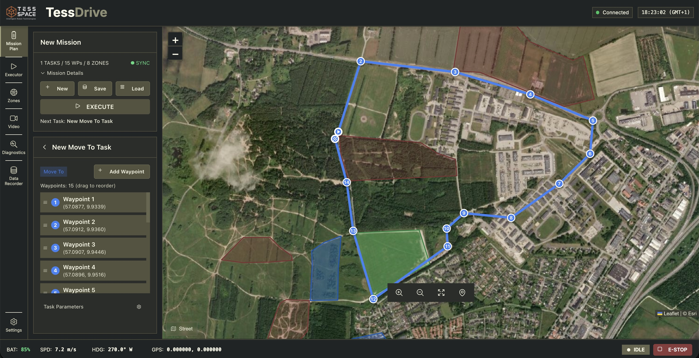
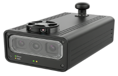

Reduce manual field effort
Reduce repeated driving, manual support trips, and non-productive movement across large and difficult sites with our autonomous ground system.
Mineral exploration
Tess Space provides autonomous ground vehicles, onboard AI navigation, and mission software for mineral exploration and remote site operations. We support terrain mapping, field surveys, site analytics, robotic logistics, and equipment transport across large, remote, and difficult-to-access environments.
Why Tess Space
Mineral exploration and remote site operations often depend on repeated driving, fragmented field tasks, and manual data capture across large and difficult terrain. Tess Space helps convert these workflows into structured autonomous ground missions that improve efficiency, consistency, and site understanding.
Reduce repeated driving, manual support trips, and non-productive movement across large and difficult sites with our autonomous ground system.
Support structured geological field operations with repeatable missions, integrated sensing, and more consistent data collection across remote terrain.

Turn field missions into actionable outputs such as terrain models, geotagged observations, pit progress tracking, and stockpile estimation.
Use cases
Tess Space supports robotic workflows across mapping, prospecting, sampling, analytics, and remote support tasks in environments where manual driving and fragmented field work reduce efficiency.
01
Deploy autonomous UGV missions to map terrain, document remote sites, and support repeatable field surveys across large and difficult-to-access areas. Get actionable outputs such as 3D terrain models for improved site understanding.
02
Integrate exploration-relevant payloads such as thermal cameras, magnetometers, radiometric sensors, and ground-penetrating radar workflows into structured missions with geotagged sample points, mission logging, and sensor observations.

03
Generate field data for 3D site models, progress tracking, change detection, and stockpile volume estimation across evolving operational areas. Use these outputs for improved operational planning and remote monitoring.
04
Deliver tools, spare parts, and essential equipment across large sites with autonomous or supervised UGV missions, while supporting route planning, task zoning, and operator oversight.
Sensors
Tess Space integrates compact sensor payloads for navigation, geological targeting, and operational safety across remote and difficult terrain.
01
02
03
Partners


Image preview
Video preview